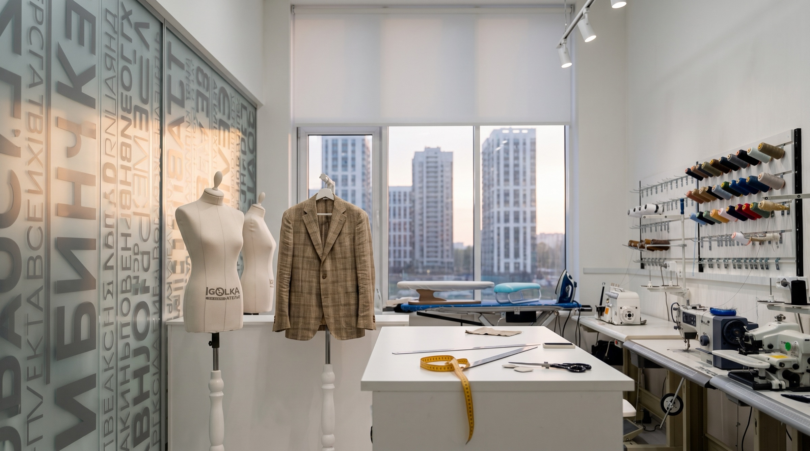
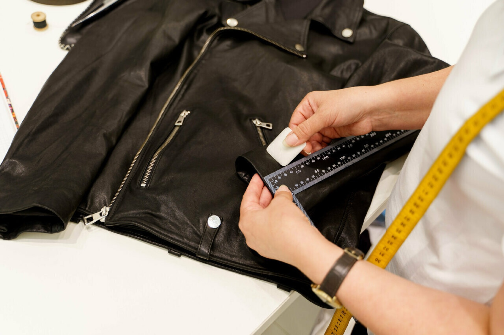
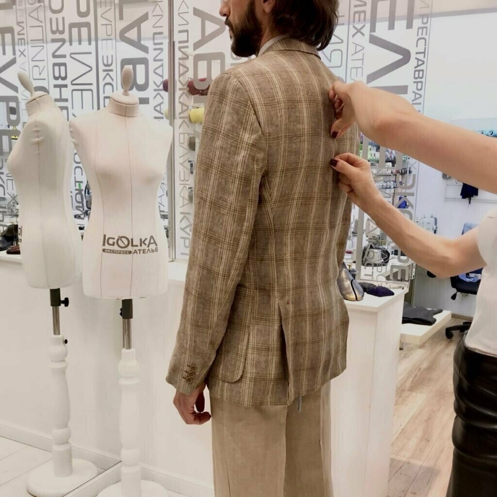
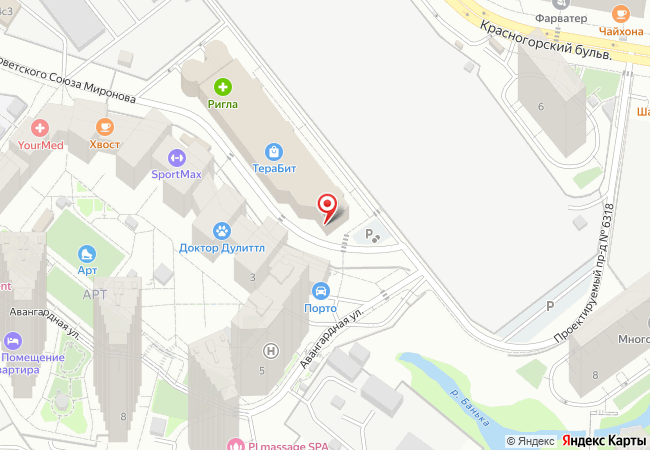

Подшиваем брюки, бывает — за полтора часа. Зашиваем разрывы на коже так, что шов трудно найти. Ателье в ТЦ «Терабит» на Красногорском бульваре.

Брюки, платья, кожаные куртки, пуховики, тонкий трикотаж и рюкзаки. Семь дней в неделю, без выходных.
Список собран из того, с чем к нам приходят чаще всего. Стоимость зависит от вещи и ткани — уточняйте по телефону.
| № | Работа | Детали |
|---|---|---|
| 01 | Подшить и укоротить | Брюки, юбки, рукава пиджака. Длину отмечают на примерке. |
| 02 | Ушить и подогнать по фигуре | Платья, рубашки, шорты, корсеты; приталить куртку, уменьшить вырез. |
| 03 | Реставрация разрывов | Разрывы по ткани и по шву, порезы на пуховике. Цель — чтобы след не был виден. |
| 04 | Кожа и брендовые вещи | Кожаные куртки, брендовые вещи, капризные ткани: шёлк, вискоза, лён. |
| 05 | Ремонт трикотажа | Тонкие водолазки, трикотажные брюки, толстовки — включая замену горловины. |
| 06 | Молнии и подклад | Замена молнии на платье, куртке, рюкзаке; ремонт подклада, детские комбинезоны. |
| 07 | Срочная работа | По договорённости, срок обсуждаем по телефону. Доставка по Павшинской пойме и выезд портного — спросите по телефону. |
Оплата картой, наличными, переводом. Есть подарочные сертификаты. Вход с пандусом, можно с животными.


Три шага, как их описывают наши клиенты в отзывах.
Приносите вещь, меряете. Мастер отмечает длину и говорит, где лучше не трогать, чтобы не испортить пропорции.
Простую работу иногда делают за пару часов. Точный срок зависит от вещи — его называют при приёме.
Присылаем сообщение о готовности. Если что-то не так, поправим.
…я принес кожаную куртку, порвал случайно и они починили так что не осталось никакого следа, даже не нашел какой нибудь шов.
На брюках был ОГРОМНЫЙ разрыв (не по шву, а по ткани). Больше 10 см… Идеально отреставрировали! Не видно от слово совсем!
Порез на пуховике… руководитель Эмма, сама консультирует клиентов… Затем множество обращений, с различными изделиями и видами тканей, и шелк и трикотажная вискоза, работа на высоте, как фабричная.
Заменить горловину на толстовке… Заменили на мягкую ткань, которая хорошо тянется. Всё сделали очень аккуратно и качественно.
…за полтора часа подошли брюки, укоротили рукава на пиджаке и поменяли молнию на платье. Всё сделали качественно!
Как нас найти
